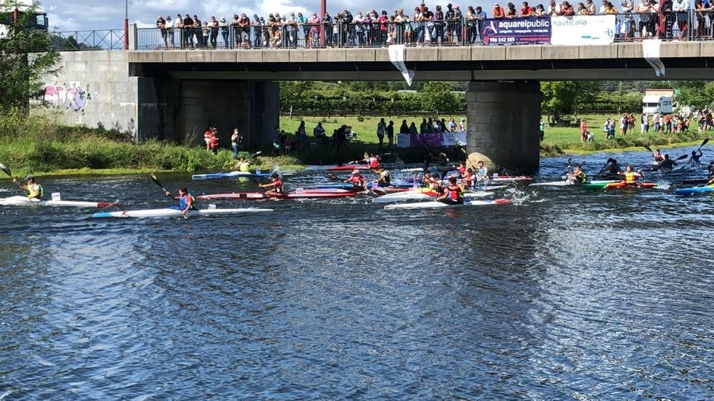
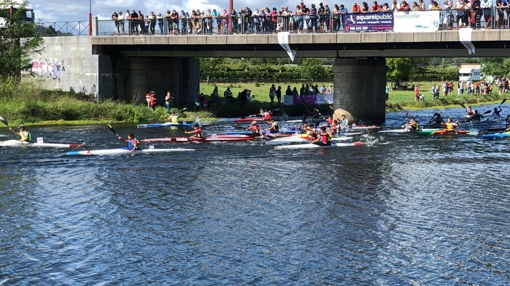
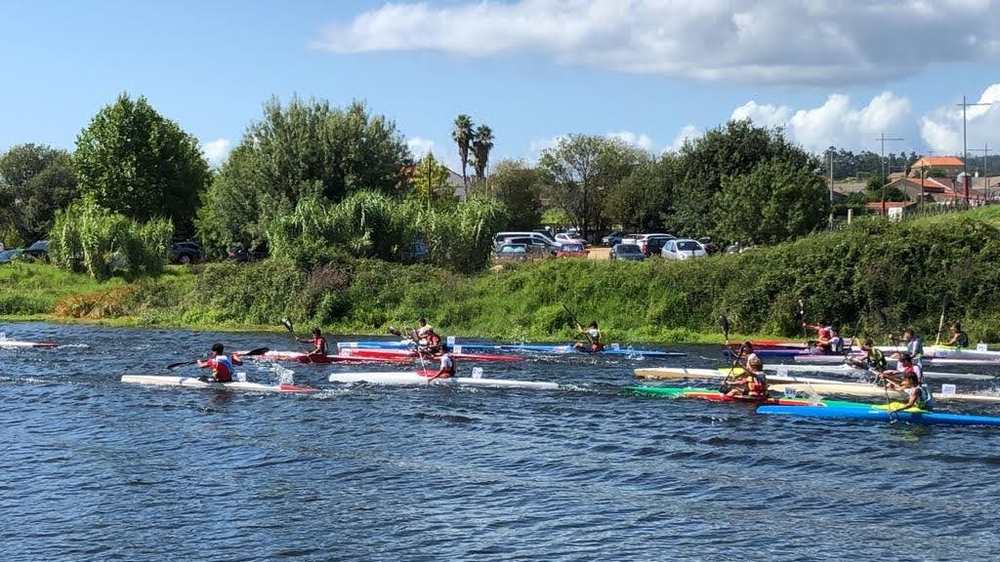
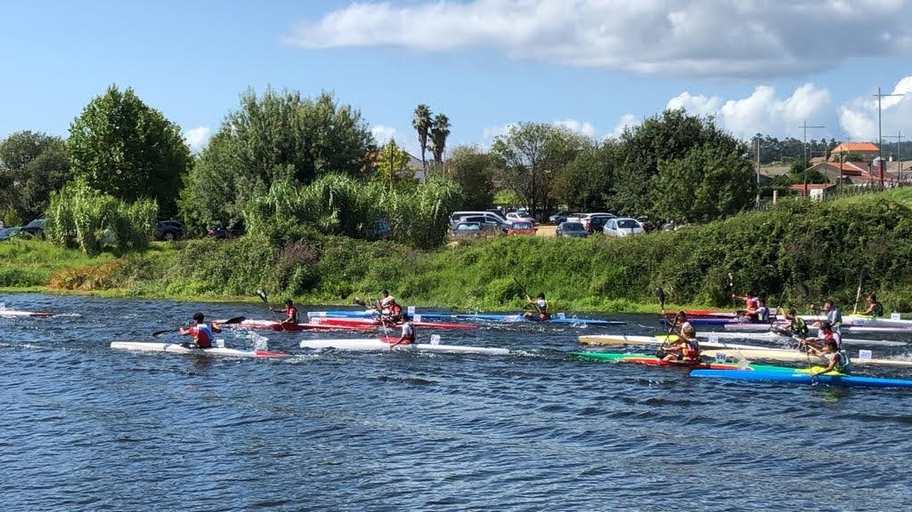

¿Qué es?
Es una categoría en la que se utilizan las embarcaciones de pista, la diferencia es, en el caso de maratón, se suelen hacer distancias muy largas y entre ellas porteos, en el caso de descenso y travesías, se hacen muchos km río abajo, y en travesía, se vuelve a subir el río, un ejemplo de descenso es el famoso descenso del Miño de Tui que comienza en Savaterra de Miño y acaba en Tui, un ejemplo de travesía sería el descanso del río Umia, que empieza y acaba en el mismo sitio. En esta categoría se usan barcos con un peso mínimo de 8kg contra los 12 que son en el reglamento de pista.


Descenso de Ribadumia
 
 


Página hecha por Alejandro Baños Bouzas, alumno de 2ºSMR